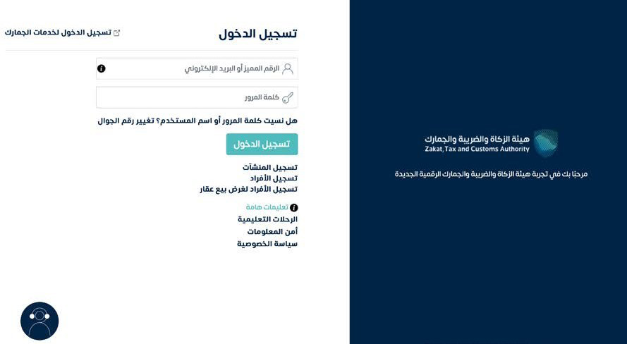
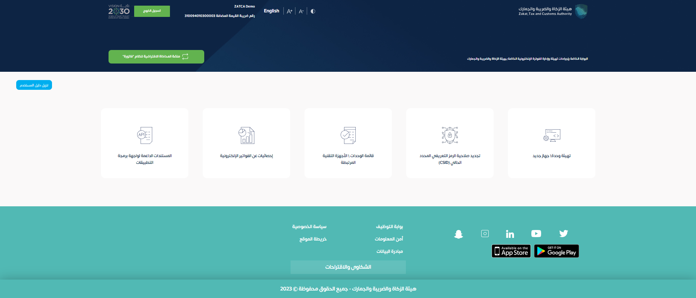
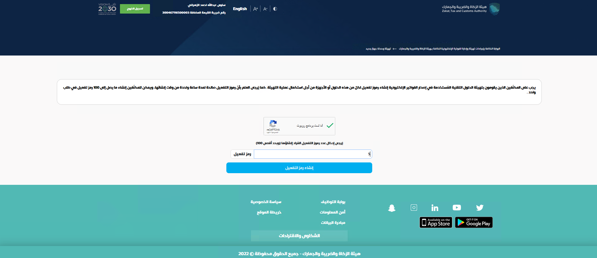
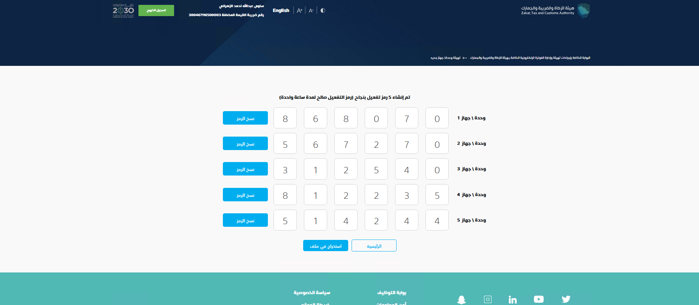

خطوات واضحة لإكمال ربط Entix Books بهيئة الزكاة والضريبة والجمارك، بنفسك أو بمساعدة فريقنا.
بيانات منشأتك الصحيحة، ثم رمز تهيئة الجهاز OTP الذي تصدره من بوابة فاتورة وقت تنفيذ الربط.
هذا الرمز مختلف عن كلمة مرور حسابك وعن رمز التحقق الذي يصل لجوالك لتسجيل الدخول.
تطلب الربط بمساعدتنا، وتجهز بيانات المنشأة. نتفق معك على جلسة الدخول وتسليم البيانات، ثم نكمل إجراءات الربط.
التفاصيل ومتطلبات التسليم: الصفحة 2.
تدخل حساب منشأتك في بوابة فاتورة، وتصدر رمزًا جديدًا، ثم تدخله في Entix أو تسلّمه للفريق أثناء الجلسة.
الخطوات المصورة: الصفحات 3 إلى 5.
دليل استخدام صادر عن Entix Books، وليس شهادة اعتماد من الهيئة. اكتمال ربط الجهاز وحالة قبول كل فاتورة يظهران بصورة منفصلة في البرنامج.
| ما نحتاجه | لماذا؟ |
|---|---|
| شهادة التسجيل في ضريبة القيمة المضافة | مطابقة الاسم القانوني والرقم الضريبي وتاريخ سريان التسجيل. |
| السجل التجاري والعنوان الوطني | استكمال هوية المنشأة وعنوان الفرع الذي سيصدر الفواتير. |
| اسم الفرع والنشاط ونوع الفواتير | تحديد الفواتير القياسية أو المبسطة أو كليهما حسب أعمال المنشأة. |
| بريد المسؤول وموعد مناسب للتنفيذ | التنسيق مع الشخص المخوّل بالدخول لحساب المنشأة. |
| إشعار المرحلة الثانية إن وُجد | مراجعة موعد الالتزام وأهلية الربط قبل تفعيل الإنتاج. |

المصدر: دليل مستخدم منصة فاتورة، النسخة الثالثة، ص 4. الصور مرجعية وقد يختلف شكل البوابة الحالي. الأرقام المعروضة أمثلة وليست رموزًا صالحة.
حساب المنشأة لدى هيئة الزكاة والضريبة والجمارك. لا تستخدم كلمة مرور Entix أو حساب بوابة المطورين.
إذا نسيت كلمة المرور، استخدم الاستعادة في صفحة الهيئة. إذا ظهرت منشأة أخرى أو لم تتوفر خدمة فاتورة، توقف وراجع صلاحيات الحساب وأهلية المنشأة مع المسؤول أو دعم الهيئة على 19993.
من الصفحة الرئيسية لبوابة فاتورة، افتح خيار «تهيئة وحدة/جهاز جديد» المشار إليه في الصورة.

المصدر: دليل مستخدم منصة فاتورة، النسخة الثالثة، ص 5. الصور مرجعية وقد يختلف شكل البوابة الحالي. الأرقام المعروضة أمثلة وليست رموزًا صالحة.
لربط المنشأة الفعلي استخدم منصة فاتورة الإنتاجية. منصة محاكاة فاتورة مخصصة للتجربة، ورمزها لا يُستخدم لإكمال الربط الإنتاجي.
فريقنا يحدد معك البيئة المطلوبة قبل استخراج الرمز. يجب أن تطابق البيئة الموجودة في إعدادات Entix.
وجود جهاز قديم لا يعني استخدام شهادته لمنشأة أخرى. كل عملية ربط تُراجع على هوية المنشأة والجهاز الصحيحين.
3حدد عدد الرموز: 1 لجهاز Entix واحد، ما لم يطلب الفريق عددًا آخر. أكمل التحقق ثم اضغط زر إنشاء الرموز.

المصدر: دليل مستخدم منصة فاتورة، النسخة الثالثة، ص 6. الصور مرجعية وقد يختلف شكل البوابة الحالي. الأرقام المعروضة أمثلة وليست رموزًا صالحة.
4انسخ رمز الجهاز الظاهر في البوابة أو نزّله. لا تنسخ أرقام الصور في هذا الدليل.

المصدر: دليل مستخدم منصة فاتورة، النسخة الثالثة، ص 7. الصور مرجعية وقد يختلف شكل البوابة الحالي. الأرقام المعروضة أمثلة وليست رموزًا صالحة.
إذا اخترت الربط بمساعدتنا، سلّم رمز الجهاز خلال الجلسة المتفق عليها مع تأكيد اسم المنشأة والرقم الضريبي ووقت إنشاء الرمز. يتولى الفريق بقية الخطوات.
إذا كنت مخوّلًا بإدارة الإعدادات وتريد إكمالها بنفسك:
تأكد من الاسم والرقم الضريبي قبل تنفيذ أي خطوة. لا تغيّر منشأة أخرى أو تستبدل شهادتها.
مخطط توضيحي لمسار العمل في Entix، وليس لقطة لحساب عميل.
| التحقق | ما الذي أراجعه؟ |
|---|---|
| المنشأة | الاسم والرقم الضريبي مطابقان لشهادة المنشأة. |
| الجهاز | البيئة «الإنتاج» وشهادة الجهاز سارية وفحوصاته ناجحة. |
| الإرسال | الحالة «مفعّل»، وليست «مجمّد حتى اكتمال التحقق». |
| الفاتورة | راجع رد الهيئة لكل فاتورة: حالة الإبلاغ أو الاعتماد حسب نوعها، وأي أخطاء أو تحذيرات. |
لا يلزم تسجيل الدخول للبوابة لكل إرسال بعد اكتمال الربط والتفعيل؛ يستخدم البرنامج اتصال الجهاز. قد يلزم تدخل جديد عند تجديد الشهادة أو إلغائها أو تغيير إعدادات الجهاز.
عدد مستخدمي البرنامج ليس هو عدد أجهزة الفوترة. يحدد الفريق وحدات الربط المطلوبة بحسب إعداد الفروع وطريقة إصدار الفواتير.
لا. المحاكاة بيئة اختبار مستقلة. قبول تجربة فيها لا يثبت الربط أو قبول الفواتير في الإنتاج.
تحقق من المنشأة والبيئة وصلاحية الرمز، ثم اطلب رمزًا جديدًا عند الحاجة. أرسل للدعم نص الخطأ والوقت فقط، دون أسرار الحساب.
للمساعدة: مركز المساعدة · support@entix.io
المصدر الرسمي للصور وخطوات البوابة: دليل مستخدم منصة فاتورة، النسخة الثالثة، الصفحات 4–7 و23.
تاريخ مراجعة الدليل: 2026-09-26. أسماء الأزرار أو شكل البوابة قد تتغير؛ ارجع إلى الدليل الرسمي عند الاختلاف.